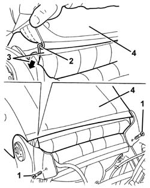
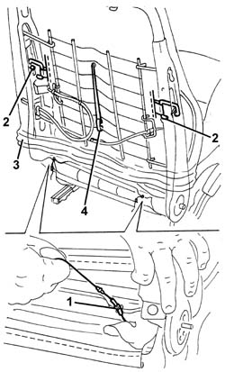
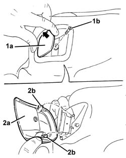
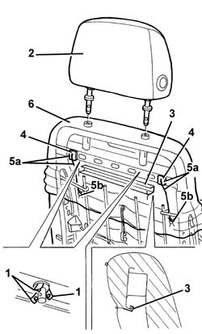
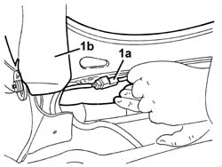
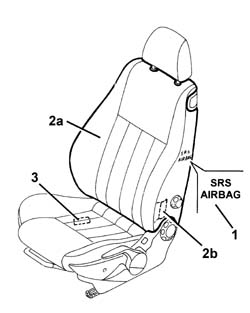
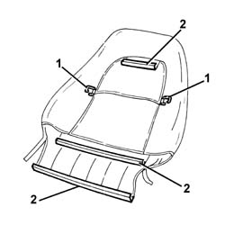
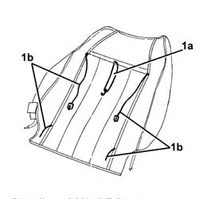
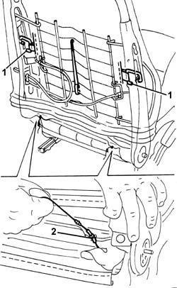

7045A84 R R HANDLE FOR FRONT SEAT FORE AND AFT ADJUSTMENT
- Path
- Procedures > 70 FITTINGS > 7045 FRONT SEATS > 7045A FRONT SEAT ASSEMBLY > 7045A84 R R HANDLE FOR FRONT SEAT FORE AND AFT ADJUSTMENT
- Kind
- repair procedure (removal / refitting; the operation number is the code)
- Applies to
- all engines; all production periods
- Interactive page
- https://sloeber94.github.io/elrnDB-aGt/en/#/125001915
Applies to: engines: 1.8 T.SPARK; all production periods
Applies to: all engines; all production periods
 Removing
Removing
 Refitting
RefittingOp. 7045A25 SQUAB LUMBAR KNOB - R R
1. Undo the rear bolts fixing the side pocket shields.
2. Disconnect the two bottom ends of the squab cover, hooked onto each other.
3. Pass the end of the trim through from the front part of the squab.
4. Lift the cover as much as possible.

Applies to: all engines; all production periods
1. Release the cords from the retainers.
2. Insert a hand under the cover and disconnect the side tensioning hooks.
3. Lift the cover as much as possible.
4. Disconnect the central flexible retainer and take out from the front side of the squab.

Applies to: all engines; all production periods
1. Raise the seat release handle (1a) and undo retainers (2b).
2. Remove panel (2a) by undoing retainers (2b).

Applies to: all engines; all production periods
1. Raise the trim as far as possible and release the head restraint pin retaining tabs.
2. Remove the head restraint.
3. Disconnect the trim upper retaining profile.
4. Using pliers, disengage the cord end retainers.
5. Pass the retainers and upholstery cords (5a) through the passages (5b) in the padding.
6. Remove the squab cover.

Applies to: all engines; all production periods
1. If necessary, disconnect squab heat pad electrical connection (1a) and remove padding (1b).

Applies to: all engines; all production periods
Refitting
RemovingCheck that the cover is intact and shows no signs of damage.
1. Check that the identifying mark of the Air Bab squab cover is on the same side as the side Air Bag module.
If a new squab cover is fitted, attach the labels as described below.
2. Remove the removable part (2b) of the adhesive label from the new squab cover (2a). Place a copy of the label (2b) in a specific file containing the vehicle details (model, registration data, chassis number) and the serial number of the old squab cover. This file should be kept for future checks.
3. Apply the original label (2b) at the bottom of the seat, where there are already the equivalent labels for seat, side Air Bag module and Air Bag wiring.

Applies to: all engines; all production periods
1. Check that the tensioniong hooks are present and positioned correctly in the rear of the cover.
2. Check the condition of the retaining profiles.

Applies to: all engines; all production periods
1. Check that the flexible retainer (1a) and upholstery cords (1b) are present and positioned correctly in the front of the cover.

Applies to: all engines; all production periods
If removed, position the padding and connect the electrical connection with the squab heat pad.
Position the trim on the top of the squab.
Pass the upholstery cords through the passages in the padding.
Engage the cord end retainers.
Connect the trim upper retaining profile.
Lower the trim.
Position the seat release handle panel and engage with its retainers. Then do up the screw.
Connect the central elastic to the retainer.
1. Connect the side tensioning hooks.
Position the head restraint and fit into its seat. Engage the retaining tabs.
2. Pull the upholstery cords and attach them to the retainers.

Applies to: all engines; all production periods
Fully lower the trim and hook the two bottom ends of the squab cover to each other.
Tighten the side shield rear retaining bolts.
Applies to: all engines; all production periods
Topics linked from this page (3)
Topics that link to this page (8)
- 7045A38 DEVICE FOR DRIVER`S SEAT SQUAB LUMBAR ADJUSTMENT - R R WITH SEAT REMOVED
- 7045A85 R R HANDLE FOR FRONT SEAT FORE AND AFT ADJUSTMENT
- 7045A88 R R HANDLE FOR FRONT SEAT FORE AND AFT ADJUSTMENT
- 7045A89 R R HANDLE FOR FRONT SEAT FORE AND AFT ADJUSTMENT
- 7045A92 R R HANDLE FOR FRONT SEAT FORE AND AFT ADJUSTMENT
- 7045A93 R R HANDLE FOR FRONT SEAT FORE AND AFT ADJUSTMENT
- 7045L30 BACKREST FOLDING CONTROL CABLE/ROD - R.R.
- 7045M26 L/H OR R/H FRONT SEAT SQUAB HEAT PAD - R+R FOLLOWING ELECTRICAL WIRING CHECK